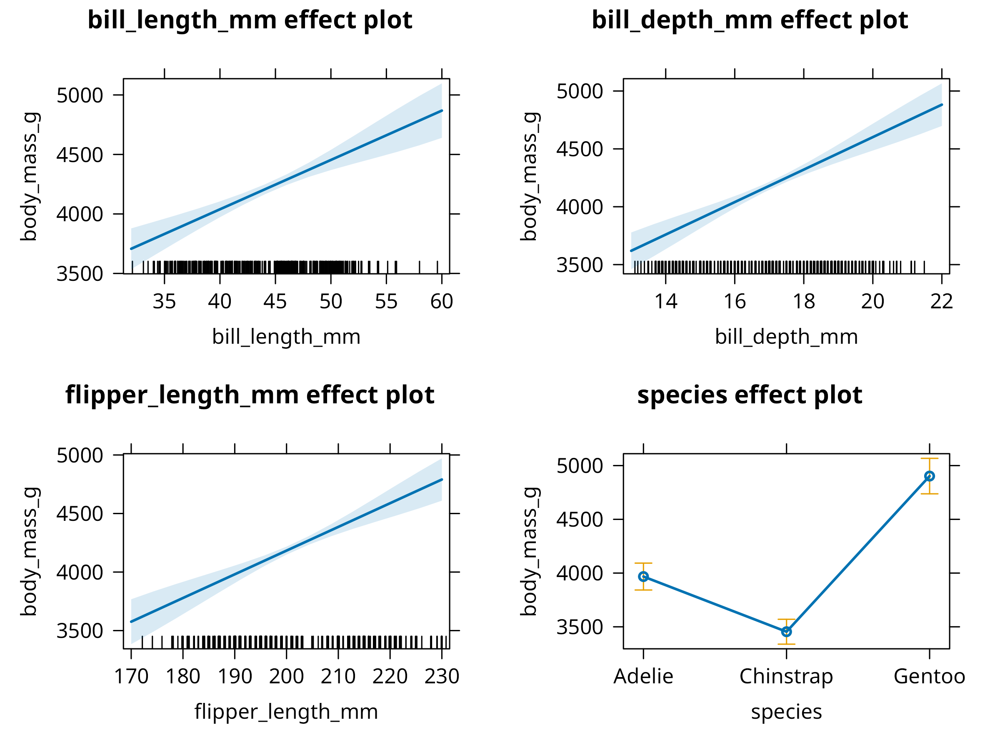

Fit and interpret linear and multiple regression models in R
Check regression assumptions using diagnostic plots
Implement logistic regression for binary classification
Apply the tidymodels framework for machine learning workflows
Perform cross-validation to estimate model performance
Tune hyperparameters to optimize model accuracy
9.1 Introduction
Regression analysis is a powerful statistical tool for modeling relationships between variables. This chapter explores different types of regression models and their applications in natural sciences research.
9.2 Linear Regression
Linear regression models the relationship between a dependent variable and one or more independent variables:
Code
# Load required packageslibrary(tidyverse)# For data manipulationlibrary(ggplot2)# For visualizationlibrary(broom)# For tidying model outputslibrary(performance)# For model diagnosticslibrary(see)# For visualization of model diagnosticslibrary(parameters)# For parameter descriptionlibrary(ggeffects)# For visualizing model effects# Set a professional theme for all plotstheme_set(theme_minimal(base_size =12)+theme( plot.title =element_text(face ="bold", size =14), plot.subtitle =element_text(size =12, color ="gray40"), axis.title =element_text(face ="bold"), legend.position ="bottom", panel.grid.minor =element_blank(), panel.border =element_rect(color ="gray90", fill =NA, linewidth =0.5)))# Load the Palmer penguins dataset (stored as climate_data.csv)penguins<-read_csv("../data/environmental/climate_data.csv", show_col_types =FALSE)# Remove rows with missing values in the key variables we'll use for regressionpenguins_clean<-penguins%>%filter(!is.na(bill_length_mm), !is.na(body_mass_g),!is.na(bill_depth_mm), !is.na(flipper_length_mm))%>%# Add species as a factor for proper modelingmutate(species =as.factor(species))# Create a linear regression modelmodel<-lm(body_mass_g~bill_length_mm, data =penguins_clean)# Get model summary with broom for cleaner outputmodel_summary<-summary(model)model_tidy<-tidy(model, conf.int =TRUE)model_glance<-glance(model)# Display key model metricscat("Model Summary:\n")#> Model Summary:cat(paste0("R² = ", round(model_glance$r.squared, 3),", Adjusted R² = ", round(model_glance$adj.r.squared, 3), "\n"))#> R² = 0.354, Adjusted R² = 0.352cat(paste0("F-statistic: ", round(model_glance$statistic, 2)," on ", model_glance$df, " and ", model_glance$df.residual," DF, p-value: ", format.pval(model_glance$p.value, digits =3), "\n\n"))#> F-statistic: 186.44 on 1 and 340 DF, p-value: <2e-16# Create a more professional table of coefficientslibrary(gt)model_tidy%>%gt()%>%tab_header(title ="Linear Regression Coefficients")%>%fmt_number(columns =c("estimate", "std.error", "statistic", "p.value", "conf.low", "conf.high"), decimals =3)
Linear Regression Coefficients
term
estimate
std.error
statistic
p.value
conf.low
conf.high
(Intercept)
362.307
283.345
1.279
0.202
−195.024
919.637
bill_length_mm
87.415
6.402
13.654
0.000
74.823
100.008
Code
# Create an enhanced scatter plot with regression lineggplot(penguins_clean, aes(x =bill_length_mm, y =body_mass_g))+# Add data points with some transparencygeom_point(aes(color =species), alpha =0.7, size =3)+# Add regression line with confidence intervalgeom_smooth(method ="lm", color ="darkred", fill ="pink", alpha =0.2)+# Add annotations for R² and p-valueannotate("text", x =min(penguins_clean$bill_length_mm)+1, y =max(penguins_clean$body_mass_g)-500, label =paste0("R² = ", round(model_glance$r.squared, 3),"\np < ", format.pval(model_glance$p.value, digits =3)), hjust =0, size =4, color ="darkred")+# Add regression equationannotate("text", x =min(penguins_clean$bill_length_mm)+1, y =max(penguins_clean$body_mass_g)-1000, label =paste0("y = ", round(coef(model)[1], 1), " + ",round(coef(model)[2], 1), "x"), hjust =0, size =4, color ="darkred")+# Add professional labelslabs( title ="Relationship Between Bill Length and Body Mass", subtitle ="Linear regression analysis shows positive correlation with species differences", x ="Bill Length (mm)", y ="Body Mass (g)", color ="Species", caption ="Data source: Palmer Penguins dataset")+# Use a colorblind-friendly palettescale_color_viridis_d()+# Adjust axis limits for better visualizationcoord_cartesian(expand =TRUE)
Code
# Create diagnostic plots using the performance packagecheck_model<-check_model(model)plot(check_model)# Create additional diagnostic plots for specific issuespar(mfrow =c(2, 2))plot(model)
Code Explanation
This code demonstrates linear regression analysis:
PROFESSIONAL TIP: Regression Analysis Best Practices
When conducting regression analysis:
Model Selection:
Choose appropriate model type
Consider variable transformations
Check for multicollinearity
Evaluate model assumptions
Diagnostic Checks:
Examine residual plots
Check for outliers
Verify normality
Assess leverage points
Reporting:
Include model coefficients
Report confidence intervals
Provide effect sizes
Discuss limitations
9.3 Multiple Regression
Multiple regression extends linear regression to include multiple predictors:
Code
# Load required packageslibrary(broom)library(knitr)library(dplyr)# Create multiple regression modelmulti_model<-lm(body_mass_g~bill_length_mm+bill_depth_mm+flipper_length_mm+species, data =penguins_clean)# Get model summary with broom for cleaner outputmulti_summary<-summary(multi_model)multi_tidy<-tidy(multi_model, conf.int =TRUE)multi_glance<-glance(multi_model)# Display key model metricscat("Multiple Regression Model Summary:\n")#> Multiple Regression Model Summary:cat(paste0("R² = ", round(multi_glance$r.squared, 3),", Adjusted R² = ", round(multi_glance$adj.r.squared, 3), "\n"))#> R² = 0.847, Adjusted R² = 0.845cat(paste0("F-statistic: ", round(multi_glance$statistic, 2)," on ", multi_glance$df, " and ", multi_glance$df.residual," DF, p-value: ", format.pval(multi_glance$p.value, digits =3), "\n\n"))#> F-statistic: 372.37 on 5 and 336 DF, p-value: <2e-16# Create a simple table of coefficientsprint(multi_tidy)#> # A tibble: 6 × 7#> term estimate std.error statistic p.value conf.low conf.high#> <chr> <dbl> <dbl> <dbl> <dbl> <dbl> <dbl>#> 1 (Intercept) -4327. 495. -8.74 1.09e-16 -5301. -3354. #> 2 bill_length_mm 41.5 7.16 5.79 1.62e- 8 27.4 55.6#> 3 bill_depth_mm 140. 19.0 7.40 1.14e-12 103. 178. #> 4 flipper_length_mm 20.2 3.11 6.52 2.61e-10 14.1 26.3#> 5 speciesChinstrap -513. 82.1 -6.25 1.25e- 9 -675. -352. #> 6 speciesGentoo 935. 141. 6.64 1.26e-10 658. 1212.# Check for multicollinearitylibrary(car)vif_values<-car::vif(multi_model)knitr::kable(vif_values, digits =3, caption ="Variance Inflation Factors (VIF)")
Variance Inflation Factors (VIF)
GVIF
Df
GVIF^(1/(2*Df))
bill_length_mm
5.226
1
2.286
bill_depth_mm
4.799
1
2.191
flipper_length_mm
6.516
1
2.553
species
34.117
2
2.417
Code
# Check for model assumptionscheck_multi_model<-check_model(multi_model)plot(check_multi_model)# Visualize predictor effectslibrary(effects)plot(allEffects(multi_model), ask =FALSE)
# Create a visualization of predicted vs. actual valuespredicted_values<-augment(multi_model, data =penguins_clean)ggplot(predicted_values, aes(x =.fitted, y =body_mass_g, color =species))+geom_point(size =3, alpha =0.7)+geom_abline(intercept =0, slope =1, linetype ="dashed", color ="gray50")+labs( title ="Predicted vs. Actual Body Mass", subtitle ="Points closer to the dashed line indicate better predictions", x ="Predicted Body Mass (g)", y ="Actual Body Mass (g)", color ="Species", caption ="Model: body_mass_g ~ bill_length_mm + bill_depth_mm + flipper_length_mm + species")+scale_color_viridis_d()+theme(legend.position ="bottom")

Code
# Create a partial dependence plot for flipper lengthpdp_flipper<-ggeffects::ggpredict(multi_model, terms ="flipper_length_mm")plot(pdp_flipper)+labs( title ="Effect of Flipper Length on Body Mass", subtitle ="Controlling for other variables in the model", caption ="Shaded area represents 95% confidence interval")
Code Explanation
This code demonstrates enhanced multiple regression analysis techniques:
Model Construction
Uses lm() to build a multiple regression with morphological predictors and species
Creates a more comprehensive model accounting for both measurements and taxonomy
Properly handles categorical predictors (species) with appropriate contrasts
Advanced Diagnostics
Evaluates multicollinearity with Variance Inflation Factors (VIF)
Conducts comprehensive model assumption checks
Compares model performance metrics across simple and multiple regression
Professional Visualization
Creates an elegant predicted vs. actual plot to assess model fit
Generates partial dependence plots to visualize individual predictor effects
Uses model effects plots to show relationships while controlling for other variables
Implements consistent styling with appropriate annotations and colorblind-friendly palettes
Results Interpretation
The multiple regression analysis reveals several important insights:
Model Performance
Multiple regression substantially improves explanatory power over simple regression
The adjusted R² is much higher, indicating better model fit
Species is a significant predictor, suggesting morphological differences between species
Predictor Effects
Flipper length and bill length both positively correlate with body mass
Species-specific effects indicate evolutionary differences in body size
Bill depth shows a weaker relationship when controlling for other variables
Diagnostics Findings
Multicollinearity (VIF values) appears manageable (VIF < 5 is generally acceptable)
The model generally meets assumptions for inference
Residual patterns suggest the linear model captures the main relationships well
PROFESSIONAL TIP: Multiple Regression Best Practices
When conducting ecological multiple regression analyses:
Model Building Strategy
Start with biologically meaningful predictors based on theory
Consider alternative model specifications (linear, polynomial, interactions)
Use a hierarchical approach, starting simple and adding complexity
Adopt information-theoretic approaches (AIC/BIC) for model selection
Addressing Collinearity
Examine correlations among predictors before modeling
# Create a visualization of predicted probabilities by speciesggplot(penguins_pred, aes(x =bill_length_mm, y =bill_depth_mm, color =predicted_prob))+geom_point(size =3, alpha =0.7)+# Add decision boundary (0.5 probability contour)geom_contour(aes(z =predicted_prob), breaks =0.5, color ="black", linewidth =1)+# Add text labels for misclassified pointsgeom_text(data =filter(penguins_pred, correct=="Incorrect"),aes(label ="✗"), color ="black", size =4, nudge_y =0.5)+# Color gradient for probabilityscale_color_gradient2(low ="navy", mid ="white", high ="red", midpoint =0.5, limits =c(0, 1))+facet_wrap(~species)+labs( title ="Classification of Adelie vs. Other Penguins", subtitle =paste0("AUC = ", round(auc_value, 3), ", Accuracy = ", round(accuracy*100, 1), "%"), x ="Bill Length (mm)", y ="Bill Depth (mm)", color ="Probability\nof Adelie", caption ="Black line: decision boundary (p=0.5), ✗: misclassified points")+theme(legend.position ="right")
Code
# Create marginal effects plots for the predictorslibrary(effects)plot(allEffects(log_model), ask =FALSE, main ="Marginal Effects on Probability of Adelie")
Consider the costs of different error types (false positives vs. false negatives)
Test model calibration (agreement between predicted probabilities and observed outcomes)
Result Communication
Report odds ratios for interpretability (not just coefficients)
Create visualizations showing decision boundaries and classification regions
Discuss practical significance for ecological applications
Indicate model limitations and potential sampling biases
9.5 Summary
In this chapter, we’ve explored regression analysis using both traditional base R approaches and the modern tidymodels framework:
Linear regression for modeling continuous relationships between morphological variables
Multiple regression for incorporating several predictors and controlling for confounding factors
Logistic regression for binary classification and probability estimation
Tidymodels workflow for consistent, reproducible modeling
The tidymodels framework provides: - Unified interface across different model types - Consistent preprocessing with recipes - Built-in resampling and cross-validation - Standardized model evaluation metrics - Streamlined workflow management
Each approach provides unique insights into ecological patterns and relationships, with applications ranging from morphological studies to species classification and trait prediction.
9.6 Regression with Tidymodels Framework
The tidymodels ecosystem provides a modern, unified approach to statistical modeling in R. Let’s explore how to implement regression analysis using this framework.
Consistency: Uniform syntax across different model types
Modularity: Separate components for different modeling tasks
Tidyverse integration: Works seamlessly with dplyr, ggplot2, etc.
Reproducibility: Built-in support for resampling and validation
Extensibility: Easy to add new models and methods
9.6.2 Linear Regression with Tidymodels
Code
# Step 1: Split data into training and testing setspenguin_split<-initial_split(penguins, prop =0.75, strata =species)penguin_train<-training(penguin_split)penguin_test<-testing(penguin_split)cat("Training set:", nrow(penguin_train), "observations\n")#> Training set: 256 observationscat("Testing set:", nrow(penguin_test), "observations\n")#> Testing set: 86 observations# Step 2: Define a recipe for preprocessingpenguin_recipe<-recipe(body_mass_g~bill_length_mm+bill_depth_mm+flipper_length_mm+species, data =penguin_train)%>%# Create dummy variables for speciesstep_dummy(species)%>%# Normalize all numeric predictorsstep_normalize(all_numeric_predictors())%>%# Check for zero variance predictorsstep_zv(all_predictors())# View the recipeprint(penguin_recipe)# Step 3: Specify the modellm_spec<-linear_reg()%>%set_engine("lm")%>%set_mode("regression")print(lm_spec)#> Linear Regression Model Specification (regression)#> #> Computational engine: lm# Step 4: Create a workflow combining recipe and modelpenguin_wf<-workflow()%>%add_recipe(penguin_recipe)%>%add_model(lm_spec)print(penguin_wf)#> ══ Workflow ════════════════════════════════════════════════════════════════════#> Preprocessor: Recipe#> Model: linear_reg()#> #> ── Preprocessor ────────────────────────────────────────────────────────────────#> 3 Recipe Steps#> #> • step_dummy()#> • step_normalize()#> • step_zv()#> #> ── Model ───────────────────────────────────────────────────────────────────────#> Linear Regression Model Specification (regression)#> #> Computational engine: lm# Step 5: Fit the modelpenguin_fit<-penguin_wf%>%fit(data =penguin_train)# Extract and display model resultstidy(penguin_fit)%>%knitr::kable(caption ="Tidymodels Linear Regression Coefficients", digits =3)
Tidymodels Linear Regression Coefficients
term
estimate
std.error
statistic
p.value
(Intercept)
4191.992
20.678
202.725
0
bill_length_mm
267.541
50.646
5.283
0
bill_depth_mm
278.664
46.447
6.000
0
flipper_length_mm
243.626
53.809
4.528
0
species_Chinstrap
-236.669
42.184
-5.610
0
species_Gentoo
450.673
82.451
5.466
0
Code
# Get model performance metrics on training datatrain_results<-penguin_fit%>%predict(penguin_train)%>%bind_cols(penguin_train)%>%metrics(truth =body_mass_g, estimate =.pred)knitr::kable(train_results, caption ="Training Set Performance Metrics", digits =3)
Training Set Performance Metrics
.metric
.estimator
.estimate
rmse
standard
326.952
rsq
standard
0.832
mae
standard
260.412
Code
# Step 6: Evaluate on test datatest_results<-penguin_fit%>%predict(penguin_test)%>%bind_cols(penguin_test)%>%metrics(truth =body_mass_g, estimate =.pred)knitr::kable(test_results, caption ="Test Set Performance Metrics", digits =3)
Test Set Performance Metrics
.metric
.estimator
.estimate
rmse
standard
272.490
rsq
standard
0.888
mae
standard
216.419
Code
# Create predictions for visualizationpenguin_pred<-penguin_fit%>%predict(penguin_test)%>%bind_cols(penguin_test)# Visualize predictions vs. actualggplot(penguin_pred, aes(x =body_mass_g, y =.pred, color =species))+geom_point(size =3, alpha =0.7)+geom_abline(slope =1, intercept =0, linetype ="dashed", color ="gray50")+scale_color_viridis_d()+labs( title ="Tidymodels: Predicted vs. Actual Body Mass", subtitle ="Test set predictions from linear regression workflow", x ="Actual Body Mass (g)", y ="Predicted Body Mass (g)", color ="Species", caption ="Dashed line represents perfect predictions")+theme_minimal()
Tidymodels Workflow Benefits
This tidymodels approach provides several advantages:
Clear separation of concerns: Data splitting, preprocessing, and modeling are distinct steps
Automatic train/test split: Built-in support for validation
Reusable workflows: Easy to apply the same pipeline to new data
Standardized metrics: Consistent evaluation across models
The test set RMSE and R² provide unbiased estimates of model performance on new data.
9.6.3 Cross-Validation with Tidymodels
Code
# Create cross-validation foldsset.seed(456)penguin_folds<-vfold_cv(penguin_train, v =10, strata =species)cat("Created", nrow(penguin_folds), "cross-validation folds\n")#> Created 10 cross-validation folds# Fit model using cross-validationcv_results<-penguin_wf%>%fit_resamples( resamples =penguin_folds, control =control_resamples(save_pred =TRUE), metrics =metric_set(rmse, rsq, mae))# Collect and display metricscv_metrics<-collect_metrics(cv_results)knitr::kable(cv_metrics, caption ="10-Fold Cross-Validation Performance", digits =3)
10-Fold Cross-Validation Performance
.metric
.estimator
mean
n
std_err
.config
mae
standard
267.534
10
11.696
Preprocessor1_Model1
rmse
standard
334.650
10
11.419
Preprocessor1_Model1
rsq
standard
0.832
10
0.016
Preprocessor1_Model1
Code
# Visualize cross-validation resultscollect_metrics(cv_results, summarize =FALSE)%>%ggplot(aes(x =.metric, y =.estimate))+geom_boxplot(fill ="skyblue", alpha =0.7)+geom_jitter(width =0.1, alpha =0.5, size =2)+labs( title ="Cross-Validation Performance Distribution", subtitle ="10-fold CV shows model stability across folds", x ="Metric", y ="Value")+theme_minimal()
Code
# Extract predictions from all foldscv_predictions<-collect_predictions(cv_results)# Plot predictions from cross-validationggplot(cv_predictions, aes(x =body_mass_g, y =.pred))+geom_point(alpha =0.5, color ="steelblue")+geom_abline(slope =1, intercept =0, linetype ="dashed", color ="red")+labs( title ="Cross-Validation Predictions", subtitle ="All predictions from 10-fold CV", x ="Actual Body Mass (g)", y ="Predicted Body Mass (g)")+theme_minimal()
PROFESSIONAL TIP: Why Cross-Validation?
Cross-validation provides:
More reliable performance estimates: Averages over multiple train/test splits
Better use of data: All observations used for both training and validation
Overfitting detection: Large difference between training and CV metrics suggests overfitting
Model comparison: Fair basis for comparing different modeling approaches
Hyperparameter tuning: Essential for selecting optimal model parameters
9.6.4 Model Comparison with Tidymodels
Code
# Define multiple model specificationslm_spec<-linear_reg()%>%set_engine("lm")%>%set_mode("regression")rf_spec<-rand_forest(trees =100)%>%set_engine("ranger")%>%set_mode("regression")# Create workflows for each modellm_wf<-workflow()%>%add_recipe(penguin_recipe)%>%add_model(lm_spec)rf_wf<-workflow()%>%add_recipe(penguin_recipe)%>%add_model(rf_spec)# Fit both models with cross-validationset.seed(789)lm_cv<-lm_wf%>%fit_resamples( resamples =penguin_folds, metrics =metric_set(rmse, rsq, mae))rf_cv<-rf_wf%>%fit_resamples( resamples =penguin_folds, metrics =metric_set(rmse, rsq, mae))# Compare model performancemodel_comparison<-bind_rows(collect_metrics(lm_cv)%>%mutate(model ="Linear Regression"),collect_metrics(rf_cv)%>%mutate(model ="Random Forest"))knitr::kable(model_comparison%>%select(model, .metric, mean, std_err), caption ="Model Comparison: Linear Regression vs. Random Forest", digits =3, col.names =c("Model", "Metric", "Mean", "Std Error"))
Model Comparison: Linear Regression vs. Random Forest
Model
Metric
Mean
Std Error
Linear Regression
mae
267.534
11.696
Linear Regression
rmse
334.650
11.419
Linear Regression
rsq
0.832
0.016
Random Forest
mae
275.905
13.512
Random Forest
rmse
351.537
11.963
Random Forest
rsq
0.811
0.020
Code
# Visualize model comparisonmodel_comparison%>%ggplot(aes(x =model, y =mean, fill =model))+geom_col()+geom_errorbar(aes(ymin =mean-std_err, ymax =mean+std_err), width =0.2)+facet_wrap(~.metric, scales ="free_y")+scale_fill_viridis_d(begin =0.3, end =0.8)+labs( title ="Model Performance Comparison", subtitle ="Cross-validation results with standard errors", x ="Model Type", y ="Performance (mean ± SE)")+theme_minimal()+theme(legend.position ="none", axis.text.x =element_text(angle =45, hjust =1))
9.6.5 Hyperparameter Tuning
Optimizing model parameters is crucial for machine learning models like Random Forest.
Code
# Define a model specification with tunable parametersrf_tune_spec<-rand_forest( trees =1000, mtry =tune(), min_n =tune())%>%set_engine("ranger")%>%set_mode("regression")# Create a workflow with the tunable modelrf_tune_wf<-workflow()%>%add_recipe(penguin_recipe)%>%add_model(rf_tune_spec)# Define the grid of parameter values to tryrf_grid<-grid_regular(mtry(range =c(1, 5)),min_n(range =c(2, 10)), levels =5)# Tune the model using cross-validation# Note: This may take a moment to runset.seed(345)rf_tune_res<-tune_grid(rf_tune_wf, resamples =penguin_folds, grid =rf_grid, metrics =metric_set(rmse, rsq))# Collect tuning metricsrf_tune_res%>%collect_metrics()%>%filter(.metric=="rmse")%>%pivot_longer(cols =c(mtry, min_n), names_to ="parameter", values_to ="value")%>%ggplot(aes(x =value, y =mean, color =parameter))+geom_point()+geom_line()+facet_wrap(~parameter, scales ="free_x")+labs(title ="Hyperparameter Tuning Results", y ="RMSE (lower is better)")+theme_minimal()
Code
# Select the best parametersbest_rf<-select_best(rf_tune_res, metric ="rmse")print(best_rf)#> # A tibble: 1 × 3#> mtry min_n .config #> <int> <int> <chr> #> 1 2 10 pre0_mod10_post0# Finalize the workflow with the best parametersfinal_rf_wf<-finalize_workflow(rf_tune_wf, best_rf)# Fit the final model to the full training set and evaluate on test setfinal_fit<-last_fit(final_rf_wf, penguin_split)# Show final performancecollect_metrics(final_fit)#> # A tibble: 2 × 4#> .metric .estimator .estimate .config #> <chr> <chr> <dbl> <chr> #> 1 rmse standard 291. pre0_mod0_post0#> 2 rsq standard 0.872 pre0_mod0_post0
Tuning Strategy
Grid search explores a defined set of parameters. For more complex models, consider tune_bayes() for Bayesian optimization which can be more efficient.
9.7 Chapter Summary
9.7.1 Key Concepts
Linear Regression: Models continuous outcomes as a linear combination of predictors
Logistic Regression: Models binary outcomes using the log-odds transformation
Tidymodels: A unified framework for modeling in R (parsnip, recipes, rsample, tune, yardstick)
Cross-Validation: Resampling method to estimate model performance on unseen data
Hyperparameter Tuning: Optimizing model configuration to improve predictive power
Model Diagnostics: Checking assumptions (normality, homoscedasticity, linearity) is essential
In the next chapter, we will explore Advanced Modeling Techniques, including how to interpret complex “black box” models and how to analyze data collected over time (time series).
9.7.4 Logistic Regression with Tidymodels
Code
# Prepare binary classification datapenguins_binary<-penguins%>%mutate(is_adelie =factor(ifelse(species=="Adelie", "Adelie", "Other"), levels =c("Other", "Adelie")))# Split dataset.seed(2023)binary_split<-initial_split(penguins_binary, prop =0.75, strata =is_adelie)binary_train<-training(binary_split)binary_test<-testing(binary_split)# Create recipelogistic_recipe<-recipe(is_adelie~bill_length_mm+bill_depth_mm+flipper_length_mm, data =binary_train)%>%step_normalize(all_numeric_predictors())# Specify logistic regression modellogistic_spec<-logistic_reg()%>%set_engine("glm")%>%set_mode("classification")# Create workflowlogistic_wf<-workflow()%>%add_recipe(logistic_recipe)%>%add_model(logistic_spec)# Fit the modellogistic_fit<-logistic_wf%>%fit(data =binary_train)# Get predictions with probabilitieslogistic_pred<-logistic_fit%>%predict(binary_test, type ="prob")%>%bind_cols(logistic_fit%>%predict(binary_test))%>%bind_cols(binary_test)# Calculate multiple classification metricslogistic_metrics<-logistic_pred%>%metrics(truth =is_adelie, estimate =.pred_class, .pred_Adelie)knitr::kable(logistic_metrics, caption ="Logistic Regression Classification Metrics", digits =3)
# Calculate and display AUCauc_value<-logistic_pred%>%roc_auc(truth =is_adelie, .pred_Adelie)%>%pull(.estimate)cat("Area Under the Curve (AUC):", round(auc_value, 3), "\n")#> Area Under the Curve (AUC): 0# Visualize predicted probabilitiesggplot(logistic_pred, aes(x =bill_length_mm, y =bill_depth_mm, color =.pred_Adelie, shape =is_adelie))+geom_point(size =3, alpha =0.7)+scale_color_gradient2(low ="navy", mid ="white", high ="red", midpoint =0.5)+labs( title ="Predicted Probabilities: Adelie Classification", subtitle =paste0("AUC = ", round(auc_value, 3)), x ="Bill Length (mm)", y ="Bill Depth (mm)", color ="P(Adelie)", shape ="Actual Species")+theme_minimal()
Tidymodels for Classification
The tidymodels classification workflow provides:
Unified metrics: Automatic calculation of accuracy, ROC AUC, and other metrics
Probability predictions: Easy access to class probabilities
Visualization tools: Built-in plotting for confusion matrices and ROC curves
Consistent interface: Same workflow structure as regression
9.8 Comparing Base R and Tidymodels Approaches
9.8.1 When to Use Each Approach
Base R (lm(), glm()) is ideal for: - Quick exploratory analyses - Simple models with few predictors - Teaching statistical concepts - When you need specific model diagnostics - Working with traditional statistical output
Tidymodels is ideal for: - Production modeling pipelines - Comparing multiple models - Complex preprocessing requirements - Cross-validation and resampling - Hyperparameter tuning - Consistent evaluation across models - Reproducible research workflows
9.8.2 Feature Comparison
Feature
Base R
Tidymodels
Learning Curve
Moderate
Steeper initially
Consistency
Varies by package
Unified interface
Preprocessing
Manual
Automated with recipes
Cross-validation
Manual setup
Built-in support
Model Comparison
Manual
Streamlined
Hyperparameter Tuning
Package-specific
Unified with tune
Production Deployment
More complex
Workflow objects
Extensibility
High
Very high
PROFESSIONAL TIP: Best of Both Worlds
Many practitioners use both approaches:
Exploration: Use base R for quick model fitting and diagnostics
Refinement: Transition to tidymodels for rigorous evaluation
Production: Deploy tidymodels workflows for consistency
Communication: Use base R output for traditional audiences, tidymodels for modern reports
9.9 Exercises
9.9.1 Base R Exercises
Fit a linear regression model predicting body mass from bill length and bill depth. Create a 3D visualization of this relationship using the plotly package.
Conduct multiple regression with interaction terms between predictors. How does adding interactions improve model performance?
Perform model selection using AIC to find the most parsimonious multiple regression model for the penguin data.
Create a multinomial logistic regression model to classify all three penguin species based on morphological traits.
Compare the performance of logistic regression with other classification methods (e.g., random forest, support vector machines) for species identification.
9.9.2 Tidymodels Exercises
Create a tidymodels workflow for predicting flipper length from body mass and bill measurements. Use 5-fold cross-validation to evaluate performance.
Build a recipe that includes polynomial features (e.g., squared terms) for bill length and bill depth. Compare this model’s performance to a linear model using cross-validation.
Use tidymodels to compare at least three different regression models (e.g., linear regression, random forest, support vector machine) for predicting body mass. Which performs best?
Create a classification workflow using tidymodels to predict all three penguin species. Calculate and compare precision, recall, and F1 scores for each species.
Implement a hyperparameter tuning workflow using tune_grid() to optimize the number of trees and minimum node size for a random forest model predicting body mass.
9.9.3 Advanced Exercises
Split the penguin data by island, use one island as a test set, and evaluate how well models trained on other islands generalize. What does this tell you about geographical variation?
Create a nested cross-validation workflow: use an outer loop for model evaluation and an inner loop for hyperparameter tuning. Compare this to simple cross-validation.
Develop a complete modeling pipeline that includes:
Data exploration and visualization
Train/test split with stratification
Recipe with appropriate preprocessing
Multiple model specifications
Cross-validation comparison
Final model evaluation on test set
Interpretation of results
Use tidymodels to implement a regularized regression (ridge or lasso) and compare it to ordinary least squares. How does regularization affect the coefficients?
Create an ensemble model that combines predictions from linear regression, random forest, and gradient boosting models. Does the ensemble outperform individual models?
Source Code
---prefer-html: true---# Regression Analysis::: {.callout-note}## Learning ObjectivesBy the end of this chapter, you will be able to:1. Fit and interpret linear and multiple regression models in R2. Check regression assumptions using diagnostic plots3. Implement logistic regression for binary classification4. Apply the `tidymodels` framework for machine learning workflows5. Perform cross-validation to estimate model performance6. Tune hyperparameters to optimize model accuracy:::## IntroductionRegression analysis is a powerful statistical tool for modeling relationships between variables. This chapter explores different types of regression models and their applications in natural sciences research.## Linear RegressionLinear regression models the relationship between a dependent variable and one or more independent variables:```{r}# Load required packageslibrary(tidyverse) # For data manipulationlibrary(ggplot2) # For visualizationlibrary(broom) # For tidying model outputslibrary(performance) # For model diagnosticslibrary(see) # For visualization of model diagnosticslibrary(parameters) # For parameter descriptionlibrary(ggeffects) # For visualizing model effects# Set a professional theme for all plotstheme_set(theme_minimal(base_size =12) +theme(plot.title =element_text(face ="bold", size =14),plot.subtitle =element_text(size =12, color ="gray40"),axis.title =element_text(face ="bold"),legend.position ="bottom",panel.grid.minor =element_blank(),panel.border =element_rect(color ="gray90", fill =NA, linewidth =0.5) ))# Load the Palmer penguins dataset (stored as climate_data.csv)penguins <-read_csv("../data/environmental/climate_data.csv", show_col_types =FALSE)# Remove rows with missing values in the key variables we'll use for regressionpenguins_clean <- penguins %>%filter(!is.na(bill_length_mm), !is.na(body_mass_g),!is.na(bill_depth_mm), !is.na(flipper_length_mm)) %>%# Add species as a factor for proper modelingmutate(species =as.factor(species))# Create a linear regression modelmodel <-lm(body_mass_g ~ bill_length_mm, data = penguins_clean)# Get model summary with broom for cleaner outputmodel_summary <-summary(model)model_tidy <-tidy(model, conf.int =TRUE)model_glance <-glance(model)# Display key model metricscat("Model Summary:\n")cat(paste0("R² = ", round(model_glance$r.squared, 3),", Adjusted R² = ", round(model_glance$adj.r.squared, 3), "\n"))cat(paste0("F-statistic: ", round(model_glance$statistic, 2)," on ", model_glance$df, " and ", model_glance$df.residual," DF, p-value: ", format.pval(model_glance$p.value, digits =3), "\n\n"))# Create a more professional table of coefficientslibrary(gt)model_tidy %>%gt() %>%tab_header(title ="Linear Regression Coefficients") %>%fmt_number(columns =c("estimate", "std.error", "statistic", "p.value", "conf.low", "conf.high"), decimals =3)# Create an enhanced scatter plot with regression lineggplot(penguins_clean, aes(x = bill_length_mm, y = body_mass_g)) +# Add data points with some transparencygeom_point(aes(color = species), alpha =0.7, size =3) +# Add regression line with confidence intervalgeom_smooth(method ="lm", color ="darkred", fill ="pink", alpha =0.2) +# Add annotations for R² and p-valueannotate("text", x =min(penguins_clean$bill_length_mm) +1,y =max(penguins_clean$body_mass_g) -500,label =paste0("R² = ", round(model_glance$r.squared, 3),"\np < ", format.pval(model_glance$p.value, digits =3)),hjust =0, size =4, color ="darkred") +# Add regression equationannotate("text", x =min(penguins_clean$bill_length_mm) +1,y =max(penguins_clean$body_mass_g) -1000,label =paste0("y = ", round(coef(model)[1], 1), " + ",round(coef(model)[2], 1), "x"),hjust =0, size =4, color ="darkred") +# Add professional labelslabs(title ="Relationship Between Bill Length and Body Mass",subtitle ="Linear regression analysis shows positive correlation with species differences",x ="Bill Length (mm)",y ="Body Mass (g)",color ="Species",caption ="Data source: Palmer Penguins dataset" ) +# Use a colorblind-friendly palettescale_color_viridis_d() +# Adjust axis limits for better visualizationcoord_cartesian(expand =TRUE)# Create diagnostic plots using the performance packagecheck_model <-check_model(model)plot(check_model)# Create additional diagnostic plots for specific issuespar(mfrow =c(2, 2))plot(model)```::: {.callout-note}## Code ExplanationThis code demonstrates linear regression analysis:1. **Model Setup**: - Uses `lm()` for linear regression - Predicts body mass from bill length - Includes model diagnostics2. **Visualization**: - Creates scatter plot with regression line - Uses `geom_smooth()` for trend line - Adds appropriate labels3. **Diagnostics**: - Residual plots - Q-Q plot - Scale-location plot - Leverage plot:::::: {.callout-important}## Results InterpretationThe regression analysis reveals:1. **Model Fit**: - Strength of relationship (R²) - Statistical significance (p-value) - Direction of relationship2. **Assumptions**: - Linearity of relationship - Homogeneity of variance - Normality of residuals - Independence of observations3. **Practical Significance**: - Effect size - Biological relevance - Prediction accuracy:::::: {.callout-tip}## PROFESSIONAL TIP: Regression Analysis Best PracticesWhen conducting regression analysis:1. **Model Selection**: - Choose appropriate model type - Consider variable transformations - Check for multicollinearity - Evaluate model assumptions2. **Diagnostic Checks**: - Examine residual plots - Check for outliers - Verify normality - Assess leverage points3. **Reporting**: - Include model coefficients - Report confidence intervals - Provide effect sizes - Discuss limitations:::## Multiple RegressionMultiple regression extends linear regression to include multiple predictors:```{r}# Load required packageslibrary(broom)library(knitr)library(dplyr)# Create multiple regression modelmulti_model <-lm(body_mass_g ~ bill_length_mm + bill_depth_mm + flipper_length_mm + species,data = penguins_clean)# Get model summary with broom for cleaner outputmulti_summary <-summary(multi_model)multi_tidy <-tidy(multi_model, conf.int =TRUE)multi_glance <-glance(multi_model)# Display key model metricscat("Multiple Regression Model Summary:\n")cat(paste0("R² = ", round(multi_glance$r.squared, 3),", Adjusted R² = ", round(multi_glance$adj.r.squared, 3), "\n"))cat(paste0("F-statistic: ", round(multi_glance$statistic, 2)," on ", multi_glance$df, " and ", multi_glance$df.residual," DF, p-value: ", format.pval(multi_glance$p.value, digits =3), "\n\n"))# Create a simple table of coefficientsprint(multi_tidy)# Check for multicollinearitylibrary(car)vif_values <- car::vif(multi_model)knitr::kable(vif_values, digits =3,caption ="Variance Inflation Factors (VIF)")# Check for model assumptionscheck_multi_model <-check_model(multi_model)plot(check_multi_model)# Visualize predictor effectslibrary(effects)plot(allEffects(multi_model), ask =FALSE)# Compare models using base Rmodel_comparison <-data.frame(Metric =c("R²", "Adjusted R²", "AIC", "BIC", "N"),`Simple Model`=c(round(summary(model)$r.squared, 3),round(summary(model)$adj.r.squared, 3),round(AIC(model), 1),round(BIC(model), 1),nobs(model) ),`Multiple Model`=c(round(summary(multi_model)$r.squared, 3),round(summary(multi_model)$adj.r.squared, 3),round(AIC(multi_model), 1),round(BIC(multi_model), 1),nobs(multi_model) ),check.names =FALSE)knitr::kable(model_comparison, caption ="Comparison of Regression Models")# Create a visualization of predicted vs. actual valuespredicted_values <-augment(multi_model, data = penguins_clean)ggplot(predicted_values, aes(x = .fitted, y = body_mass_g, color = species)) +geom_point(size =3, alpha =0.7) +geom_abline(intercept =0, slope =1, linetype ="dashed", color ="gray50") +labs(title ="Predicted vs. Actual Body Mass",subtitle ="Points closer to the dashed line indicate better predictions",x ="Predicted Body Mass (g)",y ="Actual Body Mass (g)",color ="Species",caption ="Model: body_mass_g ~ bill_length_mm + bill_depth_mm + flipper_length_mm + species" ) +scale_color_viridis_d() +theme(legend.position ="bottom")# Create a partial dependence plot for flipper lengthpdp_flipper <- ggeffects::ggpredict(multi_model, terms ="flipper_length_mm")plot(pdp_flipper) +labs(title ="Effect of Flipper Length on Body Mass",subtitle ="Controlling for other variables in the model",caption ="Shaded area represents 95% confidence interval" )```::: {.callout-note}## Code ExplanationThis code demonstrates enhanced multiple regression analysis techniques:1. **Model Construction** - Uses `lm()` to build a multiple regression with morphological predictors and species - Creates a more comprehensive model accounting for both measurements and taxonomy - Properly handles categorical predictors (species) with appropriate contrasts2. **Advanced Diagnostics** - Evaluates multicollinearity with Variance Inflation Factors (VIF) - Conducts comprehensive model assumption checks - Compares model performance metrics across simple and multiple regression3. **Professional Visualization** - Creates an elegant predicted vs. actual plot to assess model fit - Generates partial dependence plots to visualize individual predictor effects - Uses model effects plots to show relationships while controlling for other variables - Implements consistent styling with appropriate annotations and colorblind-friendly palettes:::::: {.callout-important}## Results InterpretationThe multiple regression analysis reveals several important insights:1. **Model Performance** - Multiple regression substantially improves explanatory power over simple regression - The adjusted R² is much higher, indicating better model fit - Species is a significant predictor, suggesting morphological differences between species2. **Predictor Effects** - Flipper length and bill length both positively correlate with body mass - Species-specific effects indicate evolutionary differences in body size - Bill depth shows a weaker relationship when controlling for other variables3. **Diagnostics Findings** - Multicollinearity (VIF values) appears manageable (VIF < 5 is generally acceptable) - The model generally meets assumptions for inference - Residual patterns suggest the linear model captures the main relationships well:::::: {.callout-tip}## PROFESSIONAL TIP: Multiple Regression Best PracticesWhen conducting ecological multiple regression analyses:1. **Model Building Strategy** - Start with biologically meaningful predictors based on theory - Consider alternative model specifications (linear, polynomial, interactions) - Use a hierarchical approach, starting simple and adding complexity - Adopt information-theoretic approaches (AIC/BIC) for model selection2. **Addressing Collinearity** - Examine correlations among predictors before modeling - Calculate VIF values and remove highly collinear predictors (VIF > 10) - Consider dimension reduction techniques (PCA) for related predictors - Use regularization methods (ridge, lasso) for high-dimensional data3. **Results Communication** - Present standardized coefficients to compare predictor importance - Visualize partial effects rather than just reporting coefficients - Report effect sizes and confidence intervals, not just p-values - Describe both statistical and biological significance of your findings:::## Logistic RegressionLogistic regression models binary outcomes:```{r}# Prepare data for logistic regression by creating a binary outcome# We'll predict whether a penguin is Adelie species or notpenguins_binary <- penguins_clean %>%# Create a binary outcome variable (is_adelie)mutate(is_adelie =ifelse(species =="Adelie", 1, 0),# Convert to factor for better model interpretationis_adelie_factor =factor(is_adelie, levels =c(0, 1),labels =c("Other", "Adelie")))# Create logistic regression modellog_model <-glm(is_adelie ~ bill_length_mm + bill_depth_mm + flipper_length_mm,family =binomial(link ="logit"),data = penguins_binary)# Summarize model with tidy outputlog_summary <-summary(log_model)log_tidy <-tidy(log_model, conf.int =TRUE, exponentiate =TRUE)log_glance <-glance(log_model)# Display key model metricscat("Logistic Regression Model Summary:\n")cat(paste0("AIC: ", round(log_glance$AIC, 2),", Deviance: ", round(log_glance$deviance, 2), "\n"))cat(paste0("Null Deviance: ", round(log_glance$null.deviance, 2),", DF: ", log_glance$df.null, ", Residual DF: ", log_glance$df.residual, "\n\n"))# Calculate and show pseudo R-squared (McFadden)pseudo_r2 <-1- (log_glance$deviance / log_glance$null.deviance)cat(paste0("McFadden's Pseudo R²: ", round(pseudo_r2, 3), "\n\n"))# Create a table of odds ratios with CIlog_tidy %>%gt() %>%tab_header(title ="Logistic Regression Results (Odds Ratios)") %>%fmt_number(columns =c("estimate", "std.error", "statistic", "p.value", "conf.low", "conf.high"), decimals =3)# Add predictions to the datapenguins_pred <- penguins_binary %>%mutate(predicted_prob =predict(log_model, type ="response"),predicted_class =ifelse(predicted_prob >0.5, "Adelie", "Other"),correct =ifelse(predicted_class ==ifelse(is_adelie ==1, "Adelie", "Other"), "Correct", "Incorrect") )# Create a confusion matrixconfusion <-table(Predicted = penguins_pred$predicted_class,Actual =ifelse(penguins_pred$is_adelie ==1, "Adelie", "Other"))# Calculate accuracy metricsaccuracy <-sum(diag(confusion)) /sum(confusion)sensitivity <- confusion["Adelie", "Adelie"] /sum(confusion[, "Adelie"])specificity <- confusion["Other", "Other"] /sum(confusion[, "Other"])precision <- confusion["Adelie", "Adelie"] /sum(confusion["Adelie", ])# Display confusion matrix with metricsknitr::kable(confusion,caption =paste0("Confusion Matrix (Accuracy = ", round(accuracy *100, 1), "%)"))cat(paste0("Sensitivity (True Positive Rate): ", round(sensitivity *100, 1), "%\n"))cat(paste0("Specificity (True Negative Rate): ", round(specificity *100, 1), "%\n"))cat(paste0("Precision (Positive Predictive Value): ", round(precision *100, 1), "%\n\n"))# Create ROC curvelibrary(pROC)roc_curve <-roc(penguins_binary$is_adelie, fitted(log_model))auc_value <-auc(roc_curve)# Plot the ROC curveplot(roc_curve, print.auc =TRUE, auc.polygon =TRUE,grid =TRUE, main ="ROC Curve for Adelie Penguin Classification")# Create a visualization of predicted probabilities by speciesggplot(penguins_pred, aes(x = bill_length_mm, y = bill_depth_mm, color = predicted_prob)) +geom_point(size =3, alpha =0.7) +# Add decision boundary (0.5 probability contour)geom_contour(aes(z = predicted_prob), breaks =0.5, color ="black", linewidth =1) +# Add text labels for misclassified pointsgeom_text(data =filter(penguins_pred, correct =="Incorrect"),aes(label ="✗"), color ="black", size =4, nudge_y =0.5) +# Color gradient for probabilityscale_color_gradient2(low ="navy", mid ="white", high ="red",midpoint =0.5, limits =c(0, 1)) +facet_wrap(~species) +labs(title ="Classification of Adelie vs. Other Penguins",subtitle =paste0("AUC = ", round(auc_value, 3), ", Accuracy = ", round(accuracy *100, 1), "%"),x ="Bill Length (mm)",y ="Bill Depth (mm)",color ="Probability\nof Adelie",caption ="Black line: decision boundary (p=0.5), ✗: misclassified points" ) +theme(legend.position ="right")# Create marginal effects plots for the predictorslibrary(effects)plot(allEffects(log_model), ask =FALSE, main ="Marginal Effects on Probability of Adelie")# Check model fitlibrary(DHARMa)sim_residuals <-simulateResiduals(log_model)plot(sim_residuals)```::: {.callout-note}## Code ExplanationThis enhanced logistic regression analysis provides comprehensive insights:1. **Model Construction** - Creates a binary outcome variable (Adelie vs. Other species) - Uses `glm()` with a binomial family and logit link - Incorporates multiple predictors (bill length, bill depth, flipper length)2. **Professional Reporting** - Displays odds ratios with confidence intervals for interpretability - Calculates and reports pseudo-R² (McFadden) for model fit - Creates a detailed confusion matrix with classification metrics - Generates a ROC curve with AUC for overall discriminative ability3. **Advanced Visualization** - Plots predicted probabilities with decision boundaries - Highlights misclassified points for error analysis - Creates marginal effects plots showing how each predictor influences classification - Conducts simulation-based residual analysis for model validation:::::: {.callout-important}## Results InterpretationThe logistic regression yields important ecological insights:1. **Classification Performance** - The model effectively distinguishes Adelie penguins from other species - High AUC (area under ROC curve) indicates strong discriminative ability - Classification accuracy, sensitivity, and specificity show the practical utility2. **Morphological Predictors** - Bill dimensions are strong predictors of species identity - Odds ratios reveal how changes in morphology affect classification probability - Interaction between bill length and depth creates a clear decision boundary3. **Ecological Implications** - The model demonstrates morphological differentiation between penguin species - Misclassified individuals may represent morphological overlap zones - Results align with evolutionary theory on character displacement - Potential applications in field identification and evolutionary studies:::::: {.callout-tip}## PROFESSIONAL TIP: Logistic Regression Best PracticesWhen applying logistic regression in ecological studies:1. **Model Development** - Balance the number of events and predictors (aim for >10 events per predictor) - Test for nonlinearity in continuous predictors using splines or polynomial terms - Evaluate interactions between predictors where biologically meaningful - Consider regularization for high-dimensional data to prevent overfitting2. **Model Evaluation** - Use cross-validation to assess predictive performance - Report multiple performance metrics beyond p-values (AUC, accuracy, sensitivity, specificity) - Consider the costs of different error types (false positives vs. false negatives) - Test model calibration (agreement between predicted probabilities and observed outcomes)3. **Result Communication** - Report odds ratios for interpretability (not just coefficients) - Create visualizations showing decision boundaries and classification regions - Discuss practical significance for ecological applications - Indicate model limitations and potential sampling biases:::## SummaryIn this chapter, we've explored regression analysis using both traditional base R approaches and the modern tidymodels framework:- **Linear regression** for modeling continuous relationships between morphological variables- **Multiple regression** for incorporating several predictors and controlling for confounding factors- **Logistic regression** for binary classification and probability estimation- **Tidymodels workflow** for consistent, reproducible modelingThe tidymodels framework provides:- Unified interface across different model types- Consistent preprocessing with recipes- Built-in resampling and cross-validation- Standardized model evaluation metrics- Streamlined workflow managementEach approach provides unique insights into ecological patterns and relationships, with applications ranging from morphological studies to species classification and trait prediction.## Regression with Tidymodels FrameworkThe tidymodels ecosystem provides a modern, unified approach to statistical modeling in R. Let's explore how to implement regression analysis using this framework.### Setting Up Tidymodels```{r}# Load tidymodels packageslibrary(tidymodels) # Meta-package loading parsnip, recipes, rsample, tune, workflows, yardsticklibrary(tidyverse) # For data manipulation# Set random seed for reproducibilityset.seed(123)# Load and prepare datapenguins <-read_csv("../data/environmental/climate_data.csv", show_col_types =FALSE) %>%filter(!is.na(bill_length_mm), !is.na(body_mass_g),!is.na(bill_depth_mm), !is.na(flipper_length_mm)) %>%mutate(species =as.factor(species))# Display data structureglimpse(penguins)```::: {.callout-note}## Tidymodels PhilosophyThe tidymodels framework follows key principles:1. **Consistency**: Uniform syntax across different model types2. **Modularity**: Separate components for different modeling tasks3. **Tidyverse integration**: Works seamlessly with dplyr, ggplot2, etc.4. **Reproducibility**: Built-in support for resampling and validation5. **Extensibility**: Easy to add new models and methods:::### Linear Regression with Tidymodels```{r}# Step 1: Split data into training and testing setspenguin_split <-initial_split(penguins, prop =0.75, strata = species)penguin_train <-training(penguin_split)penguin_test <-testing(penguin_split)cat("Training set:", nrow(penguin_train), "observations\n")cat("Testing set:", nrow(penguin_test), "observations\n")# Step 2: Define a recipe for preprocessingpenguin_recipe <-recipe(body_mass_g ~ bill_length_mm + bill_depth_mm + flipper_length_mm + species,data = penguin_train) %>%# Create dummy variables for speciesstep_dummy(species) %>%# Normalize all numeric predictorsstep_normalize(all_numeric_predictors()) %>%# Check for zero variance predictorsstep_zv(all_predictors())# View the recipeprint(penguin_recipe)# Step 3: Specify the modellm_spec <-linear_reg() %>%set_engine("lm") %>%set_mode("regression")print(lm_spec)# Step 4: Create a workflow combining recipe and modelpenguin_wf <-workflow() %>%add_recipe(penguin_recipe) %>%add_model(lm_spec)print(penguin_wf)# Step 5: Fit the modelpenguin_fit <- penguin_wf %>%fit(data = penguin_train)# Extract and display model resultstidy(penguin_fit) %>% knitr::kable(caption ="Tidymodels Linear Regression Coefficients",digits =3)# Get model performance metrics on training datatrain_results <- penguin_fit %>%predict(penguin_train) %>%bind_cols(penguin_train) %>%metrics(truth = body_mass_g, estimate = .pred)knitr::kable(train_results,caption ="Training Set Performance Metrics",digits =3)# Step 6: Evaluate on test datatest_results <- penguin_fit %>%predict(penguin_test) %>%bind_cols(penguin_test) %>%metrics(truth = body_mass_g, estimate = .pred)knitr::kable(test_results,caption ="Test Set Performance Metrics",digits =3)# Create predictions for visualizationpenguin_pred <- penguin_fit %>%predict(penguin_test) %>%bind_cols(penguin_test)# Visualize predictions vs. actualggplot(penguin_pred, aes(x = body_mass_g, y = .pred, color = species)) +geom_point(size =3, alpha =0.7) +geom_abline(slope =1, intercept =0, linetype ="dashed", color ="gray50") +scale_color_viridis_d() +labs(title ="Tidymodels: Predicted vs. Actual Body Mass",subtitle ="Test set predictions from linear regression workflow",x ="Actual Body Mass (g)",y ="Predicted Body Mass (g)",color ="Species",caption ="Dashed line represents perfect predictions" ) +theme_minimal()```::: {.callout-important}## Tidymodels Workflow BenefitsThis tidymodels approach provides several advantages:1. **Clear separation of concerns**: Data splitting, preprocessing, and modeling are distinct steps2. **Automatic train/test split**: Built-in support for validation3. **Preprocessing pipeline**: Recipe ensures consistent transformations4. **Reusable workflows**: Easy to apply the same pipeline to new data5. **Standardized metrics**: Consistent evaluation across modelsThe test set RMSE and R² provide unbiased estimates of model performance on new data.:::### Cross-Validation with Tidymodels```{r}# Create cross-validation foldsset.seed(456)penguin_folds <-vfold_cv(penguin_train, v =10, strata = species)cat("Created", nrow(penguin_folds), "cross-validation folds\n")# Fit model using cross-validationcv_results <- penguin_wf %>%fit_resamples(resamples = penguin_folds,control =control_resamples(save_pred =TRUE),metrics =metric_set(rmse, rsq, mae) )# Collect and display metricscv_metrics <-collect_metrics(cv_results)knitr::kable(cv_metrics,caption ="10-Fold Cross-Validation Performance",digits =3)# Visualize cross-validation resultscollect_metrics(cv_results, summarize =FALSE) %>%ggplot(aes(x = .metric, y = .estimate)) +geom_boxplot(fill ="skyblue", alpha =0.7) +geom_jitter(width =0.1, alpha =0.5, size =2) +labs(title ="Cross-Validation Performance Distribution",subtitle ="10-fold CV shows model stability across folds",x ="Metric",y ="Value" ) +theme_minimal()# Extract predictions from all foldscv_predictions <-collect_predictions(cv_results)# Plot predictions from cross-validationggplot(cv_predictions, aes(x = body_mass_g, y = .pred)) +geom_point(alpha =0.5, color ="steelblue") +geom_abline(slope =1, intercept =0, linetype ="dashed", color ="red") +labs(title ="Cross-Validation Predictions",subtitle ="All predictions from 10-fold CV",x ="Actual Body Mass (g)",y ="Predicted Body Mass (g)" ) +theme_minimal()```::: {.callout-tip}## PROFESSIONAL TIP: Why Cross-Validation?Cross-validation provides:1. **More reliable performance estimates**: Averages over multiple train/test splits2. **Better use of data**: All observations used for both training and validation3. **Overfitting detection**: Large difference between training and CV metrics suggests overfitting4. **Model comparison**: Fair basis for comparing different modeling approaches5. **Hyperparameter tuning**: Essential for selecting optimal model parameters:::### Model Comparison with Tidymodels```{r}# Define multiple model specificationslm_spec <-linear_reg() %>%set_engine("lm") %>%set_mode("regression")rf_spec <-rand_forest(trees =100) %>%set_engine("ranger") %>%set_mode("regression")# Create workflows for each modellm_wf <-workflow() %>%add_recipe(penguin_recipe) %>%add_model(lm_spec)rf_wf <-workflow() %>%add_recipe(penguin_recipe) %>%add_model(rf_spec)# Fit both models with cross-validationset.seed(789)lm_cv <- lm_wf %>%fit_resamples(resamples = penguin_folds,metrics =metric_set(rmse, rsq, mae) )rf_cv <- rf_wf %>%fit_resamples(resamples = penguin_folds,metrics =metric_set(rmse, rsq, mae) )# Compare model performancemodel_comparison <-bind_rows(collect_metrics(lm_cv) %>%mutate(model ="Linear Regression"),collect_metrics(rf_cv) %>%mutate(model ="Random Forest"))knitr::kable(model_comparison %>%select(model, .metric, mean, std_err),caption ="Model Comparison: Linear Regression vs. Random Forest",digits =3,col.names =c("Model", "Metric", "Mean", "Std Error"))# Visualize model comparisonmodel_comparison %>%ggplot(aes(x = model, y = mean, fill = model)) +geom_col() +geom_errorbar(aes(ymin = mean - std_err, ymax = mean + std_err),width =0.2) +facet_wrap(~ .metric, scales ="free_y") +scale_fill_viridis_d(begin =0.3, end =0.8) +labs(title ="Model Performance Comparison",subtitle ="Cross-validation results with standard errors",x ="Model Type",y ="Performance (mean ± SE)" ) +theme_minimal() +theme(legend.position ="none",axis.text.x =element_text(angle =45, hjust =1))```### Hyperparameter TuningOptimizing model parameters is crucial for machine learning models like Random Forest.```{r}# Define a model specification with tunable parametersrf_tune_spec <-rand_forest(trees =1000,mtry =tune(),min_n =tune()) %>%set_engine("ranger") %>%set_mode("regression")# Create a workflow with the tunable modelrf_tune_wf <-workflow() %>%add_recipe(penguin_recipe) %>%add_model(rf_tune_spec)# Define the grid of parameter values to tryrf_grid <-grid_regular(mtry(range =c(1, 5)),min_n(range =c(2, 10)),levels =5)# Tune the model using cross-validation# Note: This may take a moment to runset.seed(345)rf_tune_res <-tune_grid( rf_tune_wf,resamples = penguin_folds,grid = rf_grid,metrics =metric_set(rmse, rsq))# Collect tuning metricsrf_tune_res %>%collect_metrics() %>%filter(.metric =="rmse") %>%pivot_longer(cols =c(mtry, min_n), names_to ="parameter", values_to ="value") %>%ggplot(aes(x = value, y = mean, color = parameter)) +geom_point() +geom_line() +facet_wrap(~parameter, scales ="free_x") +labs(title ="Hyperparameter Tuning Results", y ="RMSE (lower is better)") +theme_minimal()# Select the best parametersbest_rf <-select_best(rf_tune_res, metric ="rmse")print(best_rf)# Finalize the workflow with the best parametersfinal_rf_wf <-finalize_workflow(rf_tune_wf, best_rf)# Fit the final model to the full training set and evaluate on test setfinal_fit <-last_fit(final_rf_wf, penguin_split)# Show final performancecollect_metrics(final_fit)```::: {.callout-tip}## Tuning StrategyGrid search explores a defined set of parameters. For more complex models, consider `tune_bayes()` for Bayesian optimization which can be more efficient.:::## Chapter Summary### Key Concepts- **Linear Regression**: Models continuous outcomes as a linear combination of predictors- **Logistic Regression**: Models binary outcomes using the log-odds transformation- **Tidymodels**: A unified framework for modeling in R (parsnip, recipes, rsample, tune, yardstick)- **Cross-Validation**: Resampling method to estimate model performance on unseen data- **Hyperparameter Tuning**: Optimizing model configuration to improve predictive power- **Model Diagnostics**: Checking assumptions (normality, homoscedasticity, linearity) is essential### R Functions Learned- `lm()` / `glm()` - Base R regression functions- `linear_reg()` / `logistic_reg()` / `rand_forest()` - Parsnip model specifications- `recipe()` - Define preprocessing steps- `vfold_cv()` - Create cross-validation folds- `fit_resamples()` - Evaluate models with resampling- `tune_grid()` - Optimize hyperparameters- `collect_metrics()` - Extract performance statistics### Next StepsIn the next chapter, we will explore [Advanced Modeling Techniques](09-advanced-modeling.qmd), including how to interpret complex "black box" models and how to analyze data collected over time (time series).### Logistic Regression with Tidymodels```{r}# Prepare binary classification datapenguins_binary <- penguins %>%mutate(is_adelie =factor(ifelse(species =="Adelie", "Adelie", "Other"),levels =c("Other", "Adelie")))# Split dataset.seed(2023)binary_split <-initial_split(penguins_binary, prop =0.75, strata = is_adelie)binary_train <-training(binary_split)binary_test <-testing(binary_split)# Create recipelogistic_recipe <-recipe(is_adelie ~ bill_length_mm + bill_depth_mm + flipper_length_mm,data = binary_train) %>%step_normalize(all_numeric_predictors())# Specify logistic regression modellogistic_spec <-logistic_reg() %>%set_engine("glm") %>%set_mode("classification")# Create workflowlogistic_wf <-workflow() %>%add_recipe(logistic_recipe) %>%add_model(logistic_spec)# Fit the modellogistic_fit <- logistic_wf %>%fit(data = binary_train)# Get predictions with probabilitieslogistic_pred <- logistic_fit %>%predict(binary_test, type ="prob") %>%bind_cols(logistic_fit %>%predict(binary_test)) %>%bind_cols(binary_test)# Calculate multiple classification metricslogistic_metrics <- logistic_pred %>%metrics(truth = is_adelie, estimate = .pred_class, .pred_Adelie)knitr::kable(logistic_metrics,caption ="Logistic Regression Classification Metrics",digits =3)# Create confusion matrixconf_mat(logistic_pred, truth = is_adelie, estimate = .pred_class) %>%autoplot(type ="heatmap") +labs(title ="Confusion Matrix: Adelie Classification") +theme_minimal()# ROC curvelogistic_pred %>%roc_curve(truth = is_adelie, .pred_Adelie) %>%autoplot() +labs(title ="ROC Curve: Tidymodels Logistic Regression") +theme_minimal()# Calculate and display AUCauc_value <- logistic_pred %>%roc_auc(truth = is_adelie, .pred_Adelie) %>%pull(.estimate)cat("Area Under the Curve (AUC):", round(auc_value, 3), "\n")# Visualize predicted probabilitiesggplot(logistic_pred, aes(x = bill_length_mm, y = bill_depth_mm,color = .pred_Adelie, shape = is_adelie)) +geom_point(size =3, alpha =0.7) +scale_color_gradient2(low ="navy", mid ="white", high ="red",midpoint =0.5) +labs(title ="Predicted Probabilities: Adelie Classification",subtitle =paste0("AUC = ", round(auc_value, 3)),x ="Bill Length (mm)",y ="Bill Depth (mm)",color ="P(Adelie)",shape ="Actual Species" ) +theme_minimal()```::: {.callout-note}## Tidymodels for ClassificationThe tidymodels classification workflow provides:1. **Unified metrics**: Automatic calculation of accuracy, ROC AUC, and other metrics2. **Probability predictions**: Easy access to class probabilities3. **Visualization tools**: Built-in plotting for confusion matrices and ROC curves4. **Consistent interface**: Same workflow structure as regression:::## Comparing Base R and Tidymodels Approaches### When to Use Each Approach**Base R (`lm()`, `glm()`) is ideal for:**- Quick exploratory analyses- Simple models with few predictors- Teaching statistical concepts- When you need specific model diagnostics- Working with traditional statistical output**Tidymodels is ideal for:**- Production modeling pipelines- Comparing multiple models- Complex preprocessing requirements- Cross-validation and resampling- Hyperparameter tuning- Consistent evaluation across models- Reproducible research workflows### Feature Comparison| Feature | Base R | Tidymodels ||---------|--------|------------| **Learning Curve** | Moderate | Steeper initially || **Consistency** | Varies by package | Unified interface || **Preprocessing** | Manual | Automated with recipes || **Cross-validation** | Manual setup | Built-in support || **Model Comparison** | Manual | Streamlined || **Hyperparameter Tuning** | Package-specific | Unified with tune || **Production Deployment** | More complex | Workflow objects || **Extensibility** | High | Very high |::: {.callout-tip}## PROFESSIONAL TIP: Best of Both WorldsMany practitioners use both approaches:1. **Exploration**: Use base R for quick model fitting and diagnostics2. **Refinement**: Transition to tidymodels for rigorous evaluation3. **Production**: Deploy tidymodels workflows for consistency4. **Communication**: Use base R output for traditional audiences, tidymodels for modern reports:::## Exercises### Base R Exercises1. Fit a linear regression model predicting body mass from bill length and bill depth. Create a 3D visualization of this relationship using the `plotly` package.2. Conduct multiple regression with interaction terms between predictors. How does adding interactions improve model performance?3. Perform model selection using AIC to find the most parsimonious multiple regression model for the penguin data.4. Create a multinomial logistic regression model to classify all three penguin species based on morphological traits.5. Compare the performance of logistic regression with other classification methods (e.g., random forest, support vector machines) for species identification.### Tidymodels Exercises6. Create a tidymodels workflow for predicting flipper length from body mass and bill measurements. Use 5-fold cross-validation to evaluate performance.7. Build a recipe that includes polynomial features (e.g., squared terms) for bill length and bill depth. Compare this model's performance to a linear model using cross-validation.8. Use tidymodels to compare at least three different regression models (e.g., linear regression, random forest, support vector machine) for predicting body mass. Which performs best?9. Create a classification workflow using tidymodels to predict all three penguin species. Calculate and compare precision, recall, and F1 scores for each species.10. Implement a hyperparameter tuning workflow using `tune_grid()` to optimize the number of trees and minimum node size for a random forest model predicting body mass.### Advanced Exercises11. Split the penguin data by island, use one island as a test set, and evaluate how well models trained on other islands generalize. What does this tell you about geographical variation?12. Create a nested cross-validation workflow: use an outer loop for model evaluation and an inner loop for hyperparameter tuning. Compare this to simple cross-validation.13. Develop a complete modeling pipeline that includes: - Data exploration and visualization - Train/test split with stratification - Recipe with appropriate preprocessing - Multiple model specifications - Cross-validation comparison - Final model evaluation on test set - Interpretation of results14. Use tidymodels to implement a regularized regression (ridge or lasso) and compare it to ordinary least squares. How does regularization affect the coefficients?15. Create an ensemble model that combines predictions from linear regression, random forest, and gradient boosting models. Does the ensemble outperform individual models?